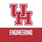
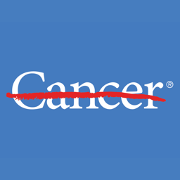
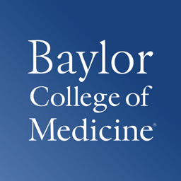
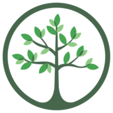
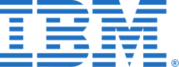

Experience
-

University of Houston · ResearcherI'm developing a neuroengineering device aimed at limiting the damage that keeps spreading through brain tissue after trauma or stroke. I lead the project in Dr. Mim Rahimi's lab, from the design and the hardware I build myself through to the experiments. Details will be shared once the work is published. After a brain injury or stroke, much of the harm happens in the hours and days that follow, and there is still no drug that protects the threatened tissue. A new way to protect it could mean better recovery for patients.Oct 2026 - present -
UTHealth Houston · ResearcherWorking with Dr. Oleh Pochynyuk at McGovern Medical School on the biology and measurement side of the same project.Oct 2026 - present
-
Layer · Co-Founder, CTO & CMOLayer connects you with people who have already done what you're working toward. I build the product and lead the marketing. Good advice often depends on who you happen to know. Layer gives anyone a way to reach someone who has already been where they want to go.Aug 2026 - present
-
Third Author · FounderStudent-led nonprofit with chapters around the worldConnects teens ages 13 to 18 with local professionalsInterviews with professors and professionals, shared onlineMost teens never get to talk with someone working in the field they are curious about. These conversations show them what a career really looks like.Oct 2026 - present
-
Instagram (@seangplee) · Content CreatorI share my research and startup journey in short videos. 11.6K followers, 25M+ views.present
-
Photography (@sean.photodiary_) · PhotographerI photograph proms, graduations, headshots, and portraits. 25+ clients so far.present
-

UT MD Anderson Cancer Center · Research InternI do computational cancer research in GI Medical Oncology, studying pSTAT3 signaling and the tumor microenvironment across gastrointestinal cancers. This led to a first-author abstract in The Oncologist and an ePoster at ESMO Asia 2026. Gastrointestinal cancers are hard to treat, and many patients do not respond to current drugs. Understanding what drives that resistance is a step toward better options for them.Jan 2024 - present -
Sutura Genomics · Co-Founder & CTOAI startup for spatial biology. We built software that realigns torn or folded tissue sections so labs can still use the data, and I led the technical side. Patient tissue samples are limited and often get damaged during preparation. Recovering that data means fewer samples and less research time are wasted.Apr - Aug 2026
-
Massachusetts Institute of Technology · ResearcherResearch internship.Jan - Jun 2026
-

Worked with Dr. Mohamed Nuh, Dr. Monica Hsiang, and Dr. Akhila Madulapalli Reddy on biliary tract cancer research. They are co-authors on my abstract in The Oncologist.Jan - Jun 2026
Volunteering
-
Texas Children's Hospital · Summer Volunteer4.3% acceptance rate program. I spent 120 hours assisting nurses and staff, and was chosen to give the commencement and closing speech. A hospital stay is hard on kids and their families. Taking small tasks off the staff gives them more time with patients.Jun - Jul 2025
-

Cholangiocarcinoma Foundation · VolunteerSet up conference sessions and assembled 500 CARE kits. The kits are sent worldwide to people facing a rare cancer.May - Jun 2026 -
KCPCH Korean School · Teaching AssistantI assist teachers in class about four hours a week. 100+ hours so far. The classes help kids keep their Korean language and culture while growing up in Texas.Aug 2024 - present
-
Hope Plus Project, Hope to the Future Association · VolunteerDesigned SDG-themed shoes supporting children's health rights in South Sudan.Jun - Aug 2025
Education
-
Cinco Ranch High School · High School DiplomaVarsity Orchestra.2024 - 2028
-
Y Combinator · Startup School 2026Accepted (ticket). Our Fall 2026 batch application ranked in the top 10%.2026
Certifications
-

IBM · Data Analysis with PythonCredential ID 5T9QMW8D921B · Show credentialJul 2026